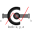

SphericalConstraintBody attached by one spring and spherical joint or constrained to environment |
|
Diagram
{kind=link}
Information
This information is part of the Modelica Standard Library maintained by the Modelica Association.
This example demonstrates the functionality of constraint representing spherical joint. Each of two bodies is at one of its end connected by spring to the world. The other end is also connected to the world either by spherical joint or by appropriate constraint. Therefore, the body can only perform spherical movement depending on working forces.
Simulation results
After simulating the model, see the animation of the multibody system and compare movement of body connected by joint (blue colored) with movement of that one connected by constraint (of green color). Additionally, the outputs from sensorConstraintRelative depict position deviations in the constraining element.
Parameters (1)
| animation |
Value: true Type: Boolean Description: = true, if animation shall be enabled |
|---|
Components (11)
| joint |
Type: Spherical |
|
|---|---|---|
|  | constraint |
Type: Spherical |
| sensorConstraintRelative |
Type: RelativeSensor |
|
| bodyOfJoint |
Type: BodyShape |
|
| bodyOfConstraint |
Type: BodyShape |
|
| springOfJoint |
Type: Spring |
|
| springOfConstraint |
Type: Spring |
|
| world |
Type: World |
|
| fixedRotation |
Type: FixedRotation |
|
| fixedTranslation |
Type: FixedTranslation |
|
| freeMotionScalarInit |
Type: FreeMotionScalarInit |